Structure and components¶
Data about the letters and the other relevant entities are stored in the vdbRdf.rdf file.
The prefixes and relative base URI of the models which have been reused are listed in the following table:
| Prefix | Base URI |
|---|---|
| bio | http://purl.rg/vocab/bio/0.1/ |
| c4o | http://purl.org/spar/c4o/ |
| cito | http://purl.org/spar/cito/ |
| deo | http://purl.org/spar/deo/ |
| doco | http://purl.org/spar/doco/ |
| dcterms | http://purl.org/dc/terms/ |
| fabio | http://purl.org/spar/fabio/ |
| foaf | http://xmlns.com/foaf/0.1/ |
| frbr | http://purl.org/vocab/frbr/core# |
| hico | http://purl.org/emmedi/hico/ |
| po | http://www.essepuntato.it/2008/12/pattern# |
| prism | http://prismstandard.org/namespaces/basic/2.0/ |
| pro | http://purl.org/spar/pro/ |
| prov | http://www.w3.org/ns/prov# |
| san | http://dati.san.beniculturali.it/SAN/ |
| schema | http://schema.org/ |
| ti | http://www.ontologydesignpatterns.org/cp/owl/timeinterval.owl# |
| tvc | http://www.essepuntato.it/2012/04/tvc/ |
The various components of the RDF graph are listed in the following subsections, each accompanied by one or more diagrams made with Graphical Framework for OWL Ontologies (Graffoo, http://www.essepuntato.it/graffoo) [1].
The Letters¶
The letters in the RDF dataset are organized in two main sets:
- the set of letters edited by Francesca Tomasi, identified with the URI
http://vespasianodabisticciletters.unibo.it/tomasi-letters; - the set of original letters sent or received by Vespasiano da Bisticci, identified by the URI
http://vespasianodabisticciletters.unibo.it/vdb-letters.
The original letters¶
The set of original letters is an instance of fabio:WorkCollection, which is made up by a series of instances of frbr:Work.
Each instance of frbr:Work represents a letter at the FRBR level of Work.
Each letter is realized through an instance of fabio:Letter (its Expression) and is portrayed in an instance of frbr:Item, which represents the proper exemplar of that letter.
An instance of fabio:Letter can be the subject of other Works and Expressions of edited letters.
An instance of fabio:Letter is embodied by instances of fabio:DigitalManifestation and fabio:AnalogManifestation (depending on whether the manifestation of a letter is in digital or in analog form).
The following figure illustrates how the digital manifestation of an original letter has been modelled.
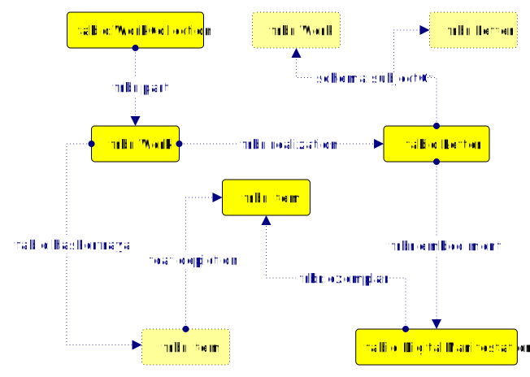An instance of fabio:DigitalManifestation embodying a letter represents the digital image of that letter.
The digital image of a letter is exemplified by an instance of frbr:Item, representing the proper .jpg file.
The following figure illustrates how the analog manifestation of an original letter has been modelled.
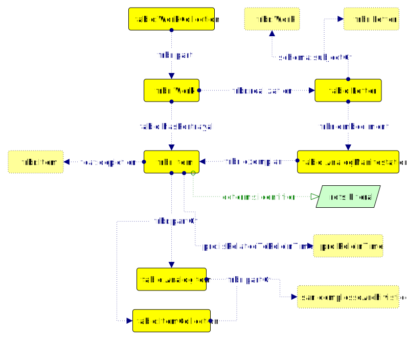An instance of fabio:AnalogManifestation embodying a letter represents the analog, non-digital manifestation of that letter.
The analog form of a letter is exemplified by an instance of frbr:Item representing the proper original exemplar of that letter.
The exemplar of a letter has an identifier and is related to one or more roles in time representing roles held by agents during the life cycle of the exemplar.
In addition, the exemplar of a letter is depicted by the .jpg digital image of that letter.
Finally, the exemplar of a letter is part of either a codex (modelled as an instance of fabio:AnalogItem) or a collection (an instance of fabio:ItemCollection).
A codex or a collection are part of an instance of san:complessoArchivistico, which represents a documental corpus held by an organization.
The edited letters¶
The following figure illustrates how the edited letters have been modelled.
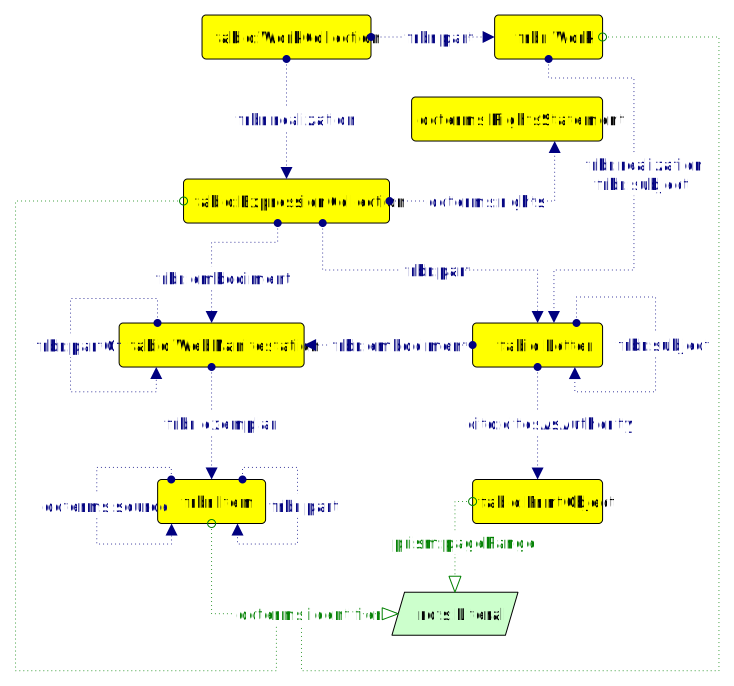The set of edited letters is an instance of fabio:WorkCollection, which is made up by a series of instances of frbr:Work.
The set of edited letters is realized through an instance of fabio:ExpressionCollection, representing the text of the Letters published by Francesca Tomasi.
An identifier is associated with the text of the Letters published by Francesca Tomasi, along with a license statement.
The text of the Letters is embodied in an instance of fabio:WebManifestation, representing the online digital edition.
Each instance of frbr:Work represents an edited letter at the FRBR level of Work.
Each edited letter is realized through an instance of fabio:Letter.
Each instance of fabio:Letter is embodied in an instance of fabio:WebManifestation (representing an online digital manifestation of a letter) and can cite one or more instances of fabio:PrintedObject as the digital edition of a single letter that provides an authoritative description or definition of the subject under discussion.
The digital edition of a single letter, in turn, can be part of another instance of fabio:PrintObject (representing the complete edition) and has a page range associated to it.
Each instance of fabio:WebManifestation is part of the web manifestation of the digital edition of Vespasiano da Bisticci’s Letters, published by Francesca Tomasi.
The online digital manifestation of the digital edition is exemplified by an instance of frbr:Item representing the proper set of files constituting the digital edition.
The proper digital edition is made up by a series of HTML-encoded digital exemplars, each exemplifying the online digital manifestation of a letter in an instance of frbr:Item.
Each digital exemplar has an identifier associated with it and is explicitly related to its original source.
Editions¶
The numerous editions of the Letters have been modelled in at least three different, but similar, ways.
An edition is an instance of frbr:Work.
A title is assigned to it, along with an author.
An edition can be realized through an instance of either fabio:Book, fabio:BookChapter or fabio:Article.
These three possible configurations share some characteristics with each other. They all have a publication year, a bibliographic reference and a volume number. Moreover, they are embodied in at least one Manifestation.
The following figure illustrates one possible configuration representing an edition.
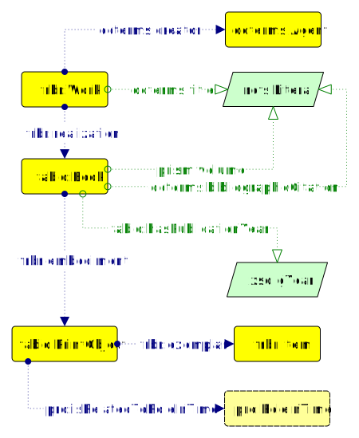An instance of fabio:Book is embodied in an instance of fabio:PrintObject, which represents the analog manifestation of the edition in physical printed form.
In turn, the analog manifestation of the edition is exemplified by an actual physical copy (modelled as an instance of frbr:Item).
The following figure illustrates another possible configuration of an edition.
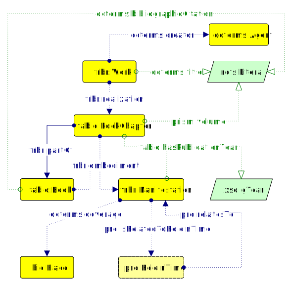An instance of fabio:BookChapter is embodied in an instance of frbr:Manifestation and is related to the book it is part of (modelled as an instance of fabio:Book).
In turn, this book is embodied in another instance of frbr:Manifestation having a publication year and a spatial coverage.
The following figure illustrates yet another possible configuration of an edition.
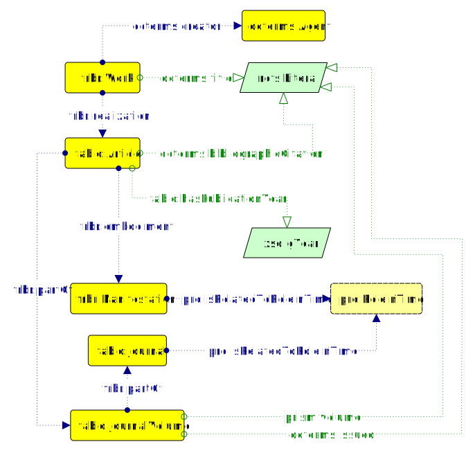An instance of fabio:Article is embodied in an instance of frbr:Manifestation.
In addition, it is also part of a published volume of a journal (modelled as an instance of fabio:JournalVolume).
Such volume has a volume number and a date of formal issuance associated with it.
Moreover, the journal volume is part of a scholarly periodical (an instance of fabio:Journal).
Instances of frbr:Manifestation, fabio:PrintObject and fabio:Journal may all be related to an instance of pro:RoleInTime.
Roles and interpretations¶
The following figure illustrates how the roles of agents in the correspondence and in the life cycle of a letter have been modelled, and how such roles have been determined by interpretation.
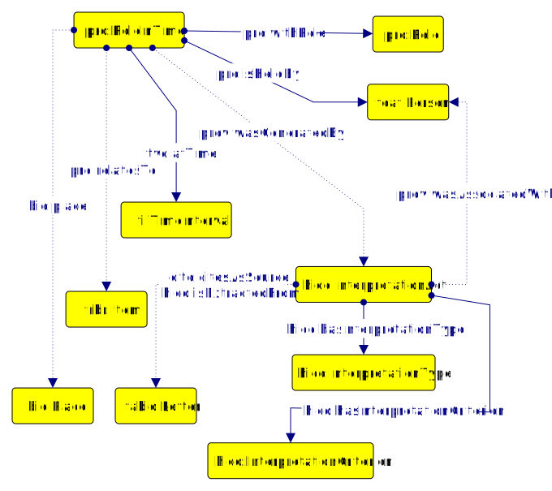A role in time (modelled via pro:RoleInTime) is a particular situation that describes a role (an instance of pro:Role), such as “sender” or “addressee”, that an agent (e.g. an organization or a person, represented respectively as an instance of foaf:Person or foaf:Organization) may have and that can be restricted to a particular time interval (modelled as an instance of ti:TimeInterval).
In addition, a role in time situation is also related to the original exemplar of the letter in question.
Also a role in time situation is related to a place (modelled as an instance of bio:Place) that is relevant with respect to the information it conveys (e.g. a place from which the sending of a letter has been done).
Ultimately, a role in time situation is related to one or more interpretation acts (each modelled as an instance of hico:InterpretationAct).
An interpretation act represents an hermeneutical activity performed by an agent in order to generate new information (e.g. the attribution of the sender of a letter).
An interpretation act has an arbitrary definition (modelled as an instance of hico:InterpretationType) and a criterion that supports it (modelled as an instance of hico:InterpretationCriterion).
An interpretation act is related to the source it is based on (the original letter) and to the source it has been extracted from (the edited letter).
The codices¶
The following figure illustrates how codices have been modelled.
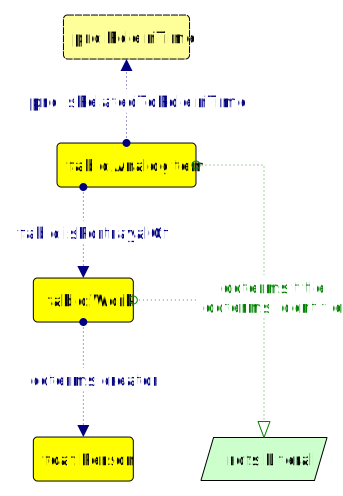A codex (modelled as an instance of fabio:AnalogItem) portrays an instance of frbr:Work.
Both have a title attached to them through the property dcterms:title.
The instance of frbr:Work may have a creator (as an instance of foaf:Person).
A codex can be related to a number of roles in time associated with the life cycle of that codex.
In turn, each role in time situation can be related to an interpretation act (hico:InterpretationAct), as seen previously.
The people¶
The following figure illustrates how correspondents, copysts and other people that is relevant to the letters’ context have been modelled.
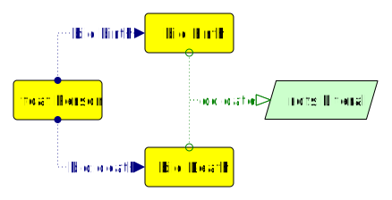A person is represented as an instance of the class foaf:Person and is linked to the main authority control vocabularies existing on the Web (such as VIAF, NAF, Geonames, and others).
A person has a date of birth and a date of death attributed to them (represented as instances of the classes bio:Birth and bio:Death).
The repositories¶
The following figure illustrates how the organizations curating the resources such as libraries or the archives have been modelled.
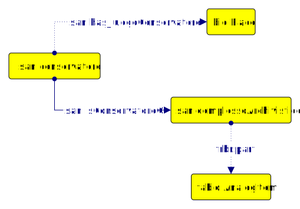The organization which is responsible for the conservation and the development of the archive has been modelled as an instance of san:conservatore.
An organization has a location (modelled as an instance of bio:Place) and is related to the documental corpus (modelled as an instance of san:complessoArchivistico).
A documental corpus is made up by one or more codices (fabio:AnalogItem).
Organizations and locations are linked to the main authority control vocabularies existing on the Web (e.g. VIAF and Geonames).
The text¶
A textual fragment is an instance of doco:TextChunk.
A textual fragment has a type (e.g. “lexical note”, “attested name”, “salutatio”, “main text”, etc.), a textual content and a source.
In addition, a textual fragment can contain other instances of doco:TextChunk.
For example, an instance of doco:TextChunk with type maintext (which represents the main text of the letter) might contain a number of philological notes, attested names of people and places, technical terms an so on, all modelled as instances of doco:TextChunk with their respective types.
The following figure illustrates how instances of doco:TextChunk have been used to model the most relevant components of a letter.
A letter is made up by a series of instances of doco:TextChunk, each representing a certain section of that letter (e.g. the salutatio, the main text, etc.).
Each section of the letter is embodied in an instance of fabio:WebManifestation, which represents a digital manifestation on the Web of that particular section of the letter.
This digital manifestation is exemplified by the singular section of the respective HTML file (modelled as an instance of frbr:Item).
The following figure illustrates how instances of doco:TextChunk have been used to model lexical terms contained in certain sections of a letter.
An instance of doco:TextChunk, representing a given component of a letter (e.g. its main text) contains in turn multiple instances of doco:TextChunk, representing specific technical lexicon inside that letter section.
Each technical lexicon has a term (an instance of fabio:SubjectTerm) that is part of a controlled vocabulary of a particular classification system used as an annotation to describe the subject, meaning or content of the letter.
Sometimes, such term might be related to one of the codices (an instance of fabio:AnalogItem).
The following figure illustrates how instances of doco:TextChunk have been used to model attested references and notes contained in certain sections of a letter.
This kind of textual fragment may reference a codex, a place, a period of time or a person. In addition, it may also have a creator.
The following figure illustrates how instances of doco:TextChunk have been used to model bibliographic references associated with other instances of doco:TextChunk contained within the sections of a letter.
A textual fragment is relevant to a particular bibliographic reference denoted by an in-text reference pointer (also modelled as an instance of doco:TextChunk) that is part of another resource.
This reference has a textual content associated with it and is part of another resource, modelled as an instance of frbr:Expression.
This resource is the realization of its respective FRBR Work, which can be associated with its respective VIAF identifier and can have a creator.
The following figure illustrates how footnotes have been modelled.
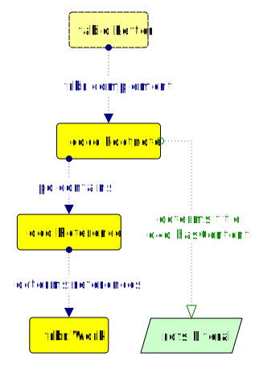An edited letter is related is complemented by a series of footnotes (each modelled as an instance of doco:Footnote).
Each footnote has a name given to it along with a textual content.
A footnote may contain a reference (modelled as an instance of deo:Reference) to an edition (modelled as an instance of frbr:Work).